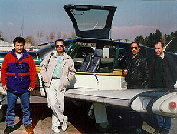
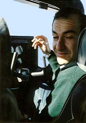

Copyright © Ali Parsa 1998-2011
All rights reserved
|
Real Flights
|  | During two reconnaissance flights to Rig-e Jenn area, I piloted our Trinidad and Tobago planes. These were built by Aerospatiale (now EADS) and have been utilized since 1990s for training by Iran Civil Aviation Organization to replace their old Bonanza airplanes. |  |
A surprize flight opportunityBahram Esna-ashari, friend who used to work with me on his BS Mechanical Engineering project back in 1980s is now a major industrialist in Iran. One of his companies is active in flight training. He kindly contacted me in 2012 and offered to arrange a flight for me in one of their ultralights.
| |
Virtual Flight
| |
Links
2002 Miramar Air Show
Some Good Aviation Links

Copyright © Ali Parsa 1998-2011
All rights reserved